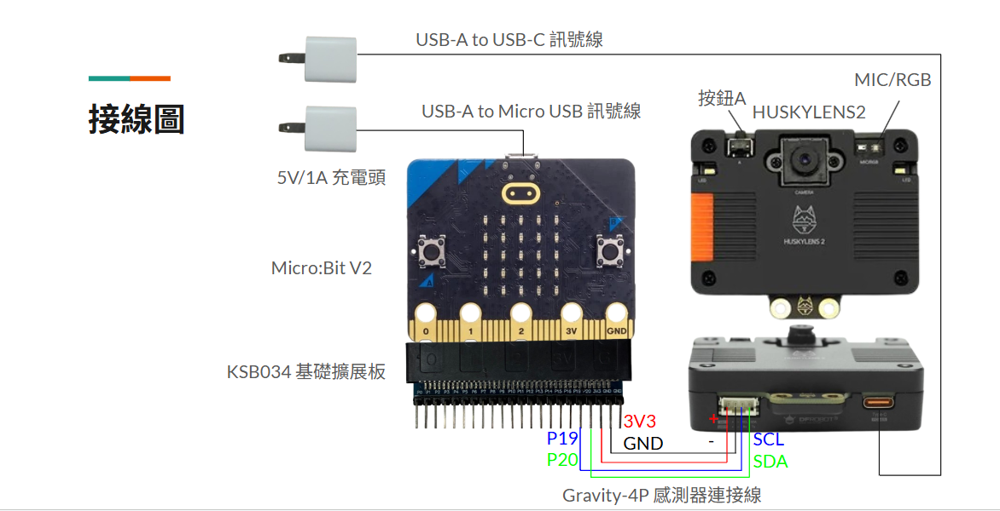
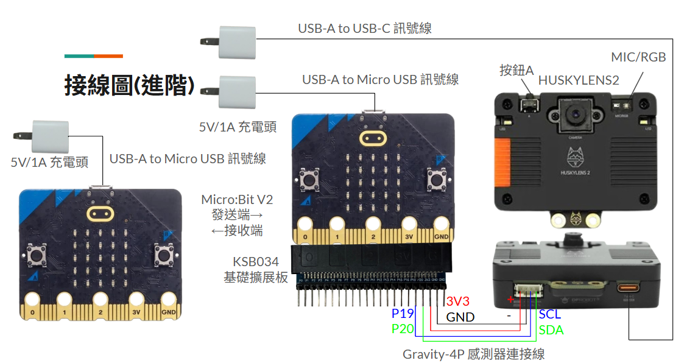

哈士奇
哈士奇眼控叫人鈴基本設定
- 將HUSKYLENS2開機，進入系統設置(System Settings)>Language>中文(繁體)。
- 於系統設置(System Settings)>協議種類(Protocol Type)>I2C。
- 選擇注視方向檢測(Eye Gaze)，進行眼控檢測。
- 第一次使用注視方向檢測(Eye Gaze)時，需要先讓設備進行學習。
- 按下按鈕A進行學習，每個ID學習至少10張圖。
- 學習順序：眼球向左看、眼球向右看、眼球看鏡頭、眼球看左上或左下、眼球看右上或右下，。
(※注意頭與鏡頭、鏡頭距離皆需固定保持不動)。
哈士奇眼控叫人鈴規則
- 指令順序有兩層，第一層指令>第二層指令(分兩段指令避免誤觸)
- 第一層指令：ID 4(眼球向左下或左上看) > ID 5(眼球向右下或右上看)，各ID 1秒才算輸入完成。
- 靜候1秒進入第二層。
- 第二層指令：ID 1(眼球向左看) > ID 1(眼球向左看) > ID 1(眼球向左看)，各ID 0.5秒才算輸入完成。
- 第二層指令：ID 1(眼球向左看) > ID 2(眼球向右看) > ID 1(眼球向左看)，各ID 0.5秒才算輸入完成。
- 靜候1秒觸發叫人鈴。
- ※第一層指令輸入第一個ID時，將會等候10秒後自動退出。
- ※第二層指令輸入第一個ID時，將會等候50秒後自動退出。
- ※MIC/RGB顯示綠燈表示有抓到ID。
哈士奇接線圖

哈士奇眼控叫人鈴材料
- HUSKYLENS2 1台
- Gravity-4P 感測器連接線 1條 ※購買HUSKYLENS2會附，購買前留意
- Micro:Bit V2 1~2片(1台接收、1台傳送)
- KSB034 基礎擴充板
- USB-A TO Micro USB 訊號線 1~2條
- USB-A TO USB-C 訊號線 1條
- 5V/1A充電頭 2~3個
- 充電電池模組(KS B040) 1~2個 ※可選
哈士奇接線圖 (進階)
